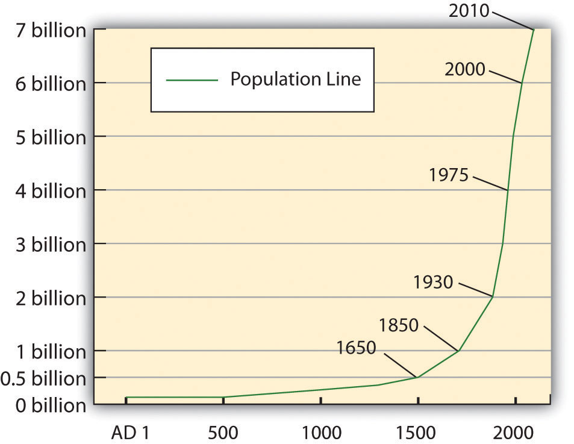
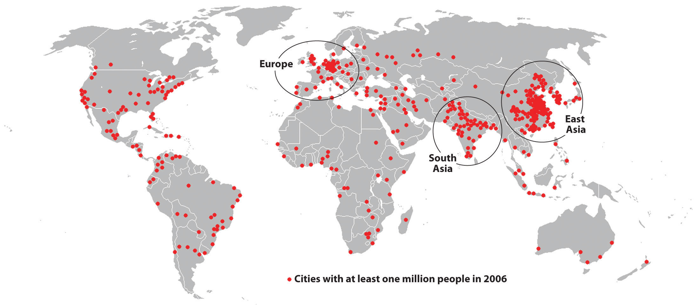
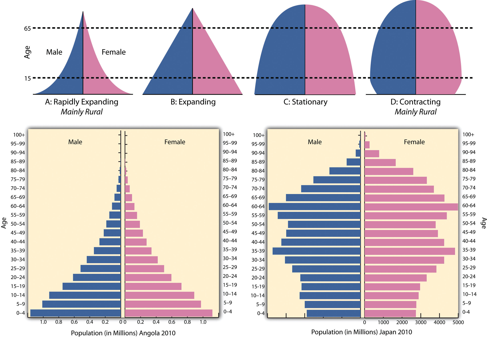
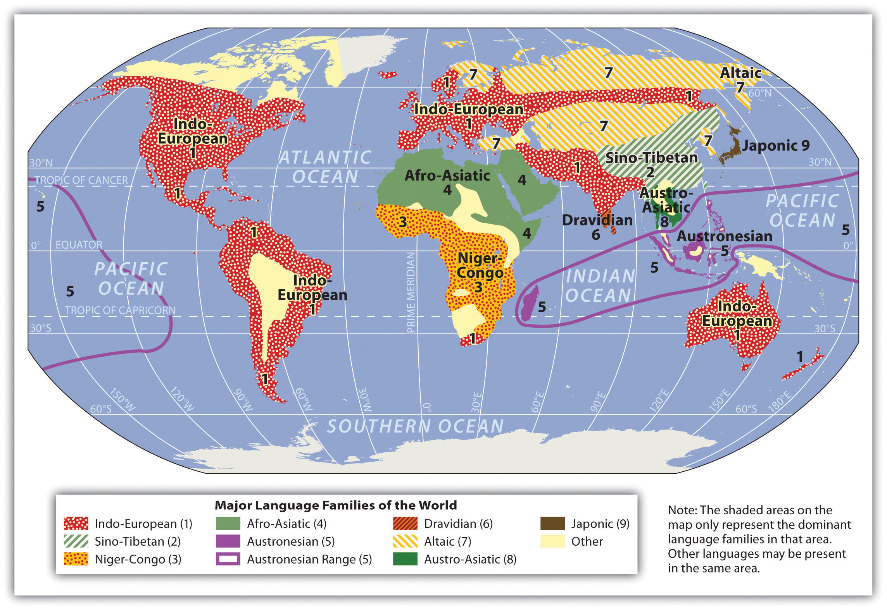
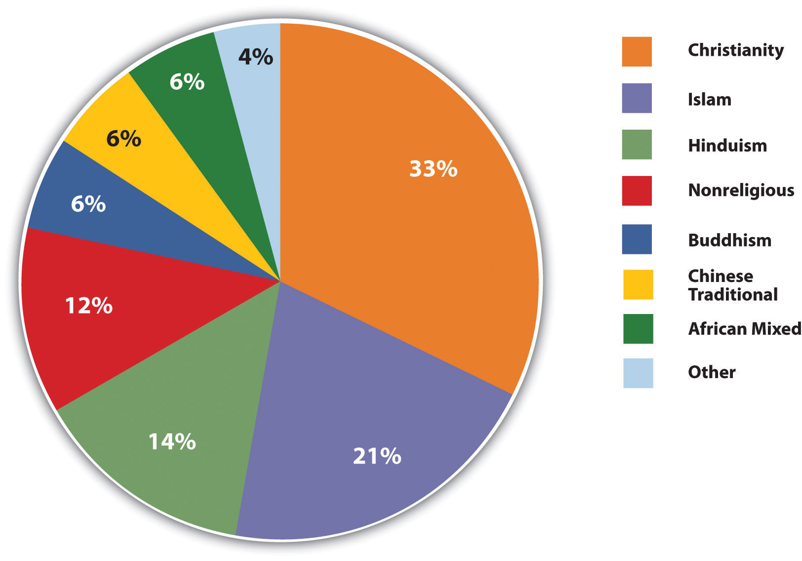
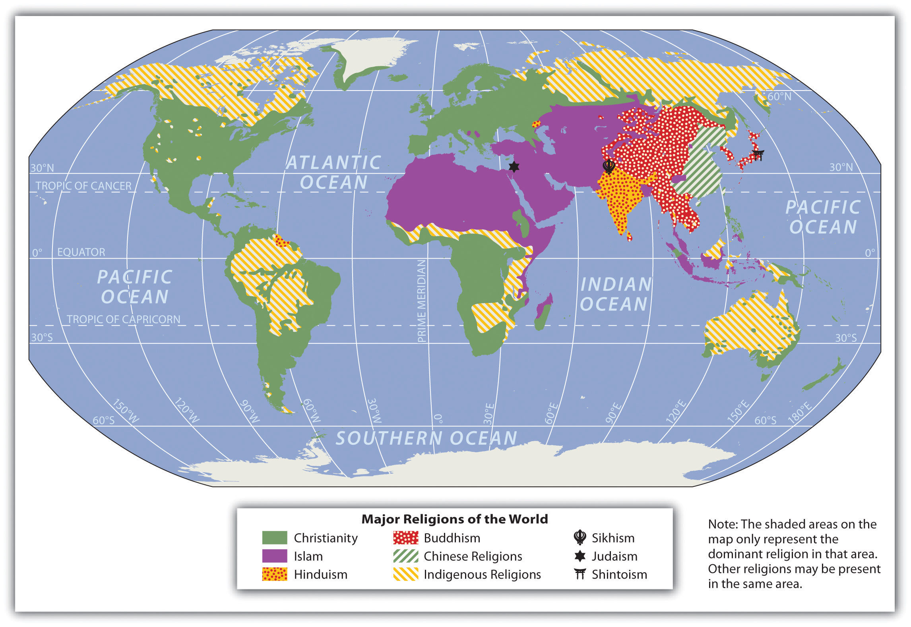

The discipline of geography bridges the social sciences with the physical sciences and can provide a framework for understanding our world. By studying geography, we can begin to understand the relationships and common factors that tie our human community together. The world is undergoing globalization on a massive scale as a result of the rapid transfer of information and technology and the growth of modes of transportation and communication. The more we understand our world, the better prepared we will be to address the issues that confront our future. There are many approaches to studying world geography. This textbook takes a regional approach and focuses on themes that illustrate the globalization process, which in turn assists us in better understanding our global community and its current affairs.
Geography helps us make sense of the world through four historical traditions:
Spatial analysis includes many of the concepts tied to geographic information science (GIS): the analysis of the interactions and distribution of many types of information using computer databases. The GIS data are entered into computer programs that convert location indicators to points or features on a map. Earth science includes the study of landforms, climates, and the distribution of plants and animals. Area or regional studies focuses on a particular region to understand the dynamics of a specific interaction between human activity and the environment. Researchers studying human-landscape interaction examine the impact of humans on their landscape and find out how different cultures have used and changed their environments. Geography provides the tools to integrate knowledge from many disciplines into a usable form by providing a sense of place to natural or human events. You will find that geography often explains why or how something occurs in a specific location. World geography utilizes the spatial approach to help understand the components of our global community.
GeographyThe spatial study of the earth’s surface. is the spatial study of the earth’s surface (from the Greek geo, which means “Earth,” and graphein, which means “to write”). Geographers study the earth’s physical characteristics, its inhabitants and cultures, phenomena such as climate, and the earth’s place within the universe. Geography examines the spatial relationships between all physical and cultural phenomena in the world. Geographers also look at how the earth, its climate, and its landscapes are changing due to cultural intervention.
The first known use of the word geography was by Eratosthenes of Cyrene (modern-day Libya in North Africa), an early Greek scholar who lived between 276 and 194 BCE. He devised one of the first systems of longitude and latitude and calculated the earth’s circumference. Additionally, he created one of the first maps of the world based on the available knowledge of the time. Around the same time, many ancient cultures in China, southern Asia, Polynesia, and the Arabian Peninsula also developed maps and navigation systems used in geography and cartography.
The discipline of geography can be broken down into two main areas of focus: physical geographyThe spatial study of natural phenomena that make up the earth’s surface. and human geographyThe study of human activity and its relationship to the earth’s surface.. These two main areas are similar in that they both use a spatial perspective, and they both include the study of place and the comparison of one place with another.
Physical geography is the spatial study of natural phenomena that make up the environment, such as rivers, mountains, landforms, weather, climate, soils, plants, and any other physical aspects of the earth’s surface. Physical geography focuses on geography as a form of earth science. It tends to emphasize the main physical parts of the earth—the lithosphere (surface layer), the atmosphere (air), the hydrosphere (water), and the biosphere (living organisms)—and the relationships between these parts.
The major forms of study within physical geography include the following:
Some physical geographers study the earth’s place in the solar system. Others are environmental geographers, part of an emerging field that studies the spatial aspects and cultural perceptions of the natural environment. Environmental geography requires an understanding of both physical and human geography, as well as an understanding of how humans conceptualize their environment and the physical landscape.
Physical landscapeThe physical environmental features that make up the earth’s surface. is the term used to describe the natural terrain at any one place on the planet. The natural forces of erosion, weather, tectonic plate action, and water have formed the earth’s physical features. Many US state and national parks attempt to preserve unique physical landscapes for the public to enjoy, such as Yellowstone, Yosemite, and the Grand Canyon.
Human geography is the study of human activity and its relationship to the earth’s surface. Human geographers examine the spatial distribution of human populations, religions, languages, ethnicities, political systems, economics, urban dynamics, and other components of human activity. They study patterns of interaction between human cultures and various environments and focus on the causes and consequences of human settlement and distribution over the landscape. While the economic and cultural aspects of humanity are primary focuses of human geography, these aspects cannot be understood without describing the landscape on which economic and cultural activities take place.
The cultural landscapePlaces where the earth’s surface has been altered by human activity. is the term used to describe those parts of the earth’s surface that have been altered or created by humans. For example, the urban cultural landscape of a city may include buildings, streets, signs, parking lots, or vehicles, while the rural cultural landscape may include fields, orchards, fences, barns, or farmsteads. Cultural forces unique to a given place—such as religion, language, ethnicity, customs, or heritage—influence the cultural landscape of that place at a given time. The colors, sizes, and shapes of the cultural landscape usually symbolize some level of significance regarding societal norms. Spatial dynamics assist in identifying and evaluating cultural differences between places.
Traditionally, the field of cartographyThe art and science of map making., or map making, has been a vital discipline for geographers. While cartography continues to be an extremely important part of geography, geographers also look at spatial (space) and temporal (time) relationships between many types of data, including physical landscape types, economies, and human activity. Geography also examines the relationships between and the processes of humans and their physical and cultural environments. Because maps are powerful graphic tools that allow us to illustrate relationships and processes at work in the world, cartography and geographic information systems have become important in modern sciences. Maps are the most common method of illustrating different spatial qualities, and geographers create and use maps to communicate spatial data about the earth’s surface.
Geospatial techniquesThe tools used by geographers to illustrate, manage and manipulate spatial data, which can include cartography, GIS, and remote sensing. are tools used by geographers to illustrate, manage, and manipulate spatial data. Cartography is the art and science of making maps, which illustrate data in a spatial form and are invaluable in understanding what is going on at a given place at a given time.
Making maps and verifying a location have become more exact with the development of the global positioning system (GPS)System that uses satellite signals to determine exact location on the earth’s surface.. A GPS unit can receive signals from orbiting satellites and calculate an exact location in latitude and longitude, which is helpful for determining where one is located on the earth or for verifying a point on a map. GPS units are standard equipment for many transportation systems and have found their way into products such as cell phones, handheld computers, fish finders, and other mobile equipment. GPS technology is widely implemented in the transport of people, goods, and services around the world.
Remote sensingThe acquisition of data about the earth’s surface through aerial photographs taken from airplanes or images created from satellites orbiting the earth. technology acquires data about the earth’s surface through aerial photographs taken from airplanes or images created from satellites orbiting the earth. Remotely sensed images allow geographers to identify, understand, or explain a particular landscape or determine the land use of a place. These images can serve as important components in the cartographic (map-making) process. These technologies provide the means to examine and analyze changes on the earth’s surface caused by natural or human forces. Google Earth is an excellent example of a computer tool that illustrates remotely sensed images of locations on the earth.
Figure 1.1 Low Elevation Air Photo of Cultural Landscape in Morehead, Kentucky

Source: Photo by R. Berglee.
Geographic information science (GIS)Science (or system) that uses a computer program to sort layers of digital data to create specialized maps focusing on specific topics., often referred to as geographic information systems, uses a computer program to assimilate and manage many layers of map data, which then provide specific information about a given place. GIS data are usually in digital form and arranged in layers. The GIS computer program can sort or analyze layers of data to illustrate a specific feature or activity. GIS programs are used in a wide range of applications, from determining the habitat range of a particular species of bird to mapping the hometowns of university students.
Figure 1.2 Illustration of Layers in a GIS Process

GIS specialists often create and analyze geographical information for government agencies or private businesses. They use computer programs to take raw data to develop the information these organizations need for making vital decisions. For example, in business applications, GIS can be used to determine a favorable location for a retail store based on the analysis of spatial data layers such as population distribution, highway or street arrangements, and the locations of similar stores or competitive establishments. GIS can integrate a number of maps into one to help analysts understand a place in relation to their own specific needs.
GIS also focuses on storing information about the earth (both cultural and natural) in computer databases that can be retrieved and displayed in the form of specialized maps for specific purposes or analyses. GIS specialists require knowledge about computer and database systems. Over the last two decades, GIS has revolutionized the field of cartography: nearly all cartography is now done with the assistance of GIS software. Additionally, analysis of various cultural and natural phenomena through the use of GIS software and specialized maps is an important part of urban planning and other social and physical sciences. GIS can also refer to techniques used to represent, analyze, and predict spatial relationships between different phenomena.
Geography is a much broader field than many people realize. Most people think of area studies as the whole of geography. In reality, geography is the study of the earth, including how human activity has changed it. Geography involves studies that are much broader than simply understanding the shape of the earth’s landforms. Physical geography involves all the planet’s physical systems. Human geography incorporates studies of human culture, spatial relationships, interactions between humans and the environment, and many other areas of research that involve the different subspecialties of geography. Students interested in a career in geography would be well served to learn geospatial techniques and gain skills and experience in GIS and remote sensing, as they are the areas within geography where employment opportunities have grown the most over the past few decades.
When identifying a region or location on the earth, the first step is to understand its relative and absolute locations. Relative locationPosition on the earth’s surface with reference to other places. is the location on the earth’s surface with reference to other places, taking into consideration features such as transportation access or terrain. Relative location helps one compare the advantages of one location with those of another. Absolute locationAn exact point on the earth’s surface that can be identified by latitude and longitude., on the other hand, refers to an exact point on the earth’s surface without regard to how that point is related to any other place. Absolute location is vital to the cartographic process and to human activities that require an agreed-upon method of identifying a place or point.
Just as you were taught in geometry that there are 360 degrees in a circle or a sphere, the earth also has 360 degrees, and they are measured using a grid pattern called the graticule. Lines of latitude and longitude allow any absolute location on the earth to have an identifiable address of degrees north or south and east or west, which allows geographers to accurately locate, measure, and study spatial activity.
Geographers and cartographers organize locations on the earth using a series of imaginary lines that encircle the globe. The two primary lines are the equator and the prime meridian. From these lines, the systems of longitude and latitude are formed, allowing you to locate yourself anywhere on the planet. The line is the longest when you travel along in an east-west direction. At the equator, the sun is directly overhead at noon on the two equinoxes, which occur in March and September.
Figure 1.3 Basic Lines of Longitude and Latitude

Figure 1.4 Noted Lines of Latitude

The equator is the largest circle of latitude on Earth. The equator divides the earth into the Northern and Southern Hemispheres and is called 0 degrees latitude. The other lines of latitude are numbered from 0 to 90 degrees going toward each of the poles. The lines north of the equator toward the North Pole are north latitude, and each of the numbers is followed by the letter “N.” The lines south of the equator toward the South Pole are south latitude, and each of the numbers is followed by the letter “S.” The equator (0 latitude) is the only line of latitude without any letter following the number. Notice that all lines of latitude are parallel to the equator (they are often called parallels) and that the North Pole equals 90 degrees N and the South Pole equals 90 degrees S. Noted parallels include both the Tropic of Cancer and the Tropic of Capricorn, which are 23.5 degrees from the equator. At 66.5 degrees from the equator are the Arctic Circle and the Antarctic Circle near the North and South Pole, respectively.
The prime meridian sits at 0 degrees longitude and divides the earth into the Eastern and Western Hemispheres. The prime meridian is defined as an imaginary line that runs through the Royal Observatory in Greenwich, England, a suburb of London. The Eastern Hemisphere includes the continents of Europe, Asia, and Australia, while the Western Hemisphere includes North and South America. All meridians (lines of longitude) east of the prime meridian (0 and 180) are numbered from 1 to 180 degrees east (E); the lines west of the prime meridian (0 and 180) are numbered from 1 to 180 degrees west (W). The 0 and 180 lines do not have a letter attached to them. The meridian at 180 degrees is called the International Date Line. The International Date Line (180 degrees longitude) is opposite the prime meridian and indicates the start of each day (Monday, Tuesday, etc.). Each day officially starts at 12:01 a.m., at the International Date Line. Do not confuse the International Date Line with the prime meridian (0 longitude). The actual International Date Line does not follow the 180-degree meridian exactly. A number of alterations have been made to the International Date Line to accommodate political agreements to include an island or country on one side of the line or another.
The earth is tilted on its axis 23.5 degrees. As it rotates around the sun, the tilt of the earth’s axis provides different climatic seasons because of the variations in the angle of direct sunlight on the planet. Places receiving more direct sunlight experience a warmer climate. Elsewhere, the increased angle of incoming solar radiation near the earth’s poles results in more reflected sunlight and thus a cooler climate. The Northern Hemisphere experiences winter when sunlight is reflected off the earth’s surface and less of the sun’s energy is absorbed because of a sharper angle from the sun.
The Tropic of Cancer is the parallel at 23.5 degrees north of the equator, which is the most northerly place on Earth, receiving direct sunlight during the Northern Hemisphere’s summer. Remember that the earth is tilted 23.5 degrees, which accounts for seasonal variations in climate. The Tropic of Capricorn is the parallel at 23.5 degrees south of the equator and is the most southerly location on Earth, receiving direct sunlight during the Southern Hemisphere’s summer.
The tropics (Cancer and Capricorn) are the two imaginary lines directly above which the sun shines on the two solsticesTime of the year when the line of direct sunlight is either the farthest north or the farthest south and is directly over either the Tropic of Cancer or the Tropic of Capricorn., which occur on or near June 20 or 21 (summer solstice in the Northern Hemisphere) and December 21 or 22 (winter solstice in the Northern Hemisphere). The sun is directly above the Tropic of Cancer at noon on June 20 or 21, marking the beginning of summer in the Northern Hemisphere and the beginning of winter in the Southern Hemisphere. The sun is directly above the Tropic of Capricorn at noon on December 21 or 22, marking the beginning of winter in the Northern Hemisphere and the beginning of summer in the Southern Hemisphere. Solstices are the extreme ends of the seasons, when the line of direct sunlight is either the farthest north or the farthest south that it ever goes. The region between the Tropics of Cancer and Capricorn is known as the tropics. This area does not experience dramatic seasonal changes because the amount of direct sunlight received does not vary widely. The higher latitudes (north of the Tropic of Cancer and south of the Tropic of Capricorn) experience significant seasonal variation in climate.
Figure 1.5 Road Sign South of Dakhla, Western Sahara (Claimed by Morocco), Marking the Tropic of Cancer

This sign was placed in this desert location by the Budapest-Bamako rally participants. The non-English portion is in Hungarian because of the European participants in the race.
Source: Photo courtesy of Andrew Szabo, http://commons.wikimedia.org/wiki/File:Tropicofcancer.jpg.
The Arctic Circle is a line of latitude at 66.5 degrees north. It is the farthest point north that receives sunlight during its winter season (90 N − 23.5 = 66.5 N). During winter, the North Pole is away from the sun and does not receive much sunlight. At times, it is dark for most of the twenty-four-hour day. During the Northern Hemisphere’s summer, the North Pole faces more toward the sun and may receive sunlight for longer portions of the twenty-four-hour day. The Antarctic Circle is the corresponding line of latitude at 66.5 degrees south. It is the farthest location south that receives sunlight during the winter season in the Southern Hemisphere (90 S − 23.5 = 66.5 S). When it is winter in the north, it is summer in the south.
The Arctic and Antarctic Circles mark the extremities (southern and northern, respectively) of the polar day (twenty-four-hour sunlit day) and the polar night (twenty-four-hour sunless night). North of the Arctic Circle, the sun is above the horizon for twenty-four continuous hours at least once per year and below the horizon for twenty-four continuous hours at least once per year. This is true also near the Antarctic Circle, but it occurs south of the Antarctic Circle, toward the South Pole. EquinoxesTime of the year in March and September when the line of direct sunlight hits the equator; at this time, days and nights are of equal length., when the line of direct sunlight hits the equator and days and nights are of equal length, occur in the spring and fall on or around March 20 or 21 and September 22 or 23.
Figure 1.6 Graphic of the Four Seasons

Source: Image courtesy of R. Berglee.
Universal Time (UT), Coordinated Universal Time (UTC), Greenwich Mean Time (GMT), or Zulu Time (Z): all four terms can be defined as local time at 0 degrees longitude, which is the prime meridian (location of Greenwich, England). This is the same time under which many military operations, international radio broadcasts, and air traffic control systems operate worldwide. UTC is set in zero- to twenty-four-hour time periods, as opposed to two twelve-hour time periods (a.m. and p.m.). The designations of a.m. and p.m. are relative to the central meridian: a.m. refers to ante meridiem, or “before noon,” and p.m. refers to post meridiem, or “after noon.” UT, UTC, GMT, and Z all refer to the same twenty-four-hour time system that assists in unifying a common time in regard to global operations. For example, all air flights use the twenty-four-hour time system so the pilots can coordinate flights across time zones and around the world.
The earth rotates on its axis once every twenty-four hours at the rate of 15 degrees per hour (15 × 24 = 360). Time zones are established roughly every 15 degrees longitude so that local times correspond to similar hours of day and night. With this system, the sun is generally overhead at noon in every time zone that follows the 15-degree-wide system. The continental United States has four main time zones (see Table 1.1 "Four Main Time Zones in the Continental United States and Their Central Meridians" and Figure 1.7 "Major Time Zones of the World").
Table 1.1 Four Main Time Zones in the Continental United States and Their Central Meridians
| USA Time Zones | Central Meridian |
|---|---|
| Eastern standard time zone | 75 degrees W |
| Central standard time zone | 90 degrees W |
| Mountain standard time zone | 105 degrees W |
| Pacific standard time zone | 120 degrees W |
Figure 1.7 Major Time Zones of the World

The twenty-four times zones are based on the prime meridian in regard to Universal Coordinated Time (UTC), Greenwich Mean Time (GMT), or Zulu Time (Z), which all operate on the twenty-four-hour time clock. Local time zones are either plus or minus determined by the distance from the prime meridian.
Figure 1.8 Diagram Illustrating the Width of a Time Zone

In this diagram, 75 W is the central meridian for the eastern standard time zone in the United States.
The eastern standard time zone is five hours earlier than the time at the prime meridian (UTC) because it is about 75 degrees west of 0 degrees (5 × 15 = 75). For example, if it is noon in London, then it is 7 a.m. in New York. If it is 1 p.m. in New York, it is 10 a.m. in San Francisco, which is three times zones to the west. Since there are twenty-four hours in a day, there are twenty-four time zones on Earth. Each time zone is 15 degrees wide.
A problem with the 15-degree time zones is that the zones do not necessarily follow state, regional, or local boundaries. The result is that time zones are seldom exactly 15 degrees wide and usually have varied boundary lines. In the United States, the boundaries between the different time zones are inconsistent with the lines of longitude; in some cases, time zones zigzag to follow state lines or to keep cities within a single time zone. Other countries address the problem differently. China, for example, is as large in land area as the United States yet operates on only one time zone for the entire country.
A region is a basic unit of study in geography—a unit of space characterized by a feature such as a common government, language, political situation, or landform. A region can be a formal country governed by political boundaries, such as France or Canada; a region can be defined by a landform, such as the drainage basin of all the water that flows into the Mississippi River; and a region can even be defined by the area served by a shopping mall. Cultural regions can be defined by similarities in human activities, traditions, or cultural attributes. Geographers use the regional unit to map features of particular interest, and data can be compared between regions to help understand trends, identify patterns, or assist in explaining a particular phenomenon.
Regions are traditionally defined by internal characteristics that provide a sense of place. Their boundaries vary with the type of region, whether it is formal, functional, or vernacular; each type has its own meaning and defined purpose. A formal regionArea with specific agreed upon administrative, governmental or political boundaries. has a governmental, administrative, or political boundary and can have political as well as geographic boundaries that are not open to dispute or debate. Formal boundaries can separate states, provinces, or countries from one another. Physical regions can be included within formal boundaries, such as the Rocky Mountains or New England. An official boundary, such as the boundary of a national park, can be considered a formal boundary. School districts, cities, and county governments have formal boundaries.
Natural physical geographic features have a huge influence on where political boundaries of formal regions are set. If you look at a world map, you will recognize that many political boundaries are natural features, such as rivers, mountain ranges, and large lakes. For example, between the United States and Mexico, the Rio Grande makes up a portion of the border. Likewise, between Canada and the United States, a major part of the eastern border is along the Saint Lawrence Seaway and the Great Lakes. Alpine mountain ranges in Europe create borders, such as the boundary between Switzerland and Italy.
While geographic features can serve as convenient formal borders, political disputes will often flare up in adjacent areas, particularly if valuable natural or cultural resources are found within the geographic features. Oil drilling near the coast of a sovereign country, for example, can cause a dispute between countries about which one has dominion over the oil resources. The exploitation of offshore fisheries can also be disputed. A Neolithic mummy of a man who died in 3300 BCE caused tension between Italy and Switzerland: the body was originally taken to Innsbruck, Switzerland, but when it was determined that the body was found about 90 meters (180 feet) inside the border of Italy, Italian officials laid claim to the body.
Functional regionsArea defined by boundaries related to a function. have boundaries related to a practical function within a given area. When the function of an area ends, the functional region ends and its boundaries cease to exist. For example, a functional region can be defined by a newspaper service or delivery area. If the newspaper goes bankrupt, the functional region no longer exists. Church parishes, shopping malls, and business service areas are other examples of functional regions. They function to serve a region and may have established boundaries for limits of the area to which they will provide service. An example of a common service area—that is, a functional region—is the region to which a local pizza shop will deliver.
Vernacular regionsLarge area defined by boundaries based on people’s perceptions or thoughts. have loosely defined boundaries based on people’s perceptions or thoughts. Vernacular regions can be fluid—that is, different people may have different opinions about the limits of the regions. Vernacular regions include concepts such as the region called the “Middle East.” Many people have a rough idea of the Middle East’s location but do not know precisely which countries make up the Middle East. Also, in the United States, the terms Midwest or South have many variations. Each individual might have a different idea about the location of the boundaries of the South or the Midwest. Whether the state of Kentucky belongs in the Midwest or in the South might be a matter of individual perception. Similarly, various regions of the United States have been referred to as the Rust Belt, Sun Belt, or Bible Belt without a clear definition of their boundaries. The limit of a vernacular area is more a matter of perception than of any formally agreed-upon criteria. Nevertheless, most people would recognize the general area being discussed when using one of the vernacular terms in a conversation.
In comparing one formal political region with another, it is often helpful to use a familiar country, state, province, or political unit as a reference or guide. Wherever you are located, you can research the statistical data for a formal region familiar to you to provide a common reference. The US state of Kentucky is one example that can be used to compare formal political regions. Kentucky ranks close to the middle range of the fifty US states in terms of its population of 4.3 million people. Kentucky is also within the median range of the fifty states in overall physical area. The state’s 40,409-square-mile physical area ranks it thirty-seventh in size in the United States. Kentucky is not as large in physical area as the western states but is larger in physical area than many of the eastern states. Kentucky includes part of the rural peripheral region of Appalachia, but the state also has cosmopolitan core urban centers such as Lexington and Louisville. Kentucky also borders the metropolitan city of Cincinnati. The rural peripheral regions of the state are home to agriculture and mining. The urban core areas are home to industry and service centers. Other US states could also be used as examples. Identifying a state’s geographical attributes provides readers both in and outside the United States with a comparison indicator for geographic purposes.
Figure 1.9

The state of Kentucky can be used as a comparison guide for understanding other formal political regions around the world.
World regional geography studies various world regions as they compare with the rest of the world. Factors for comparison include both the physical and the cultural landscape. The main questions are, Who lives there? What are their lives like? What do they do for a living? Physical factors of significance can include location, climate type, and terrain. Human factors include cultural traditions, ethnicity, language, religion, economics, and politics.
World regional geography focuses on regions of various sizes across the earth’s landscape and aspires to understand the unique character of regions in terms of their natural and cultural attributes. Spatial studies can play an important role in regional geography. The scientific approach can focus on the distribution of cultural and natural phenomena within regions as delimited by various natural and cultural factors. The focus is on the spatial relationships within any field of study, such as regional economics, resource management, regional planning, and landscape ecology.
Again, this textbook takes a regional approach with a focus on themes that illustrate the globalization process, which in turn helps us better understand our global community. The regions studied in world regional geography can be combined into larger portions called realmsThe basic unit in world regionalization; a composite of human and environmental features. . Realms are large areas of the planet, usually with multiple regions, that share the same general geographic location. Regions are cohesive areas within each realm. The following eleven realms are outlined in this text:
Figure 1.10 Major World Realms

Identify the following key places on a map:
Figure 1.11 Glaciers in Glacier National Park, Montana

Mountainous type H climates vary with elevation, with warmer temperatures at the base and colder temperatures at higher elevations.
Source: Photo by R. Berglee.
The earth’s ability to receive and absorb sunlight is a primary factor in the earth’s environment, and it also has a big impact on human populations. There are no large cities or human communities in Antarctica because it is so cold; most of the sunlight filtering down to Antarctica is reflected off the earth at that latitude because of the tilt of the earth’s axis and the resulting angle of incoming solar radiation. Answering the basic questions of where most humans live on Earth and why they live there depends on understanding climate. Moderate type C climates usually provide the greatest opportunities for human habitation.
Since the region between the Tropic of Cancer and the Tropic of Capricorn receives the most direct sunlight throughout the year, it is favorable to plant and animal life, provided there is adequate moisture or precipitation. Humans have been living in the tropics for a long time, even when the ice sheets were covering parts of the midlatitudes. The problem with the tropics is that the soils are usually of poor quality and the nutrients have been leached out. Today, when we look at the earth and the distribution of human population, two main factors attract human habitation: moderate climates and access to water.
More than 70 percent of the earth’s surface is covered with water. The only problem is that less than 3 percent of the water is fresh, and most of that fresh water is stored in ice caps at the North or South Pole. This leaves less than 1 percent of the world’s fresh water for human use, usually in lakes, rivers, streams, or groundwater and underground aquifers. Climate plays an important role in where humans live because precipitation is necessary for growing crops, raising livestock, and supplying fresh water to urban communities.
Several geographers have developed categories to identify climate typesLong-term weather patterns based on environmental conditions, including temperature and precipitation.. Climate can be defined as a long-term average weather pattern evident in a particular region of the world. Weather is a term usually used to define conditions on a short-term or even daily basis. The two main elements in climate conditions are temperature and precipitation. For the purposes of this overview of world geography, the various climate types have been broken down into six basic types—A, B, C, D, E, and H—after the Köppen-Geiger classification system. Type H climates are actually a subset of the type E climate category.
Figure 1.12 Basic Climate Regions Based on the Köppen-Geiger Classification System (Local Conditions May Vary Widely)

Figure 1.13

Tropical type A climates experience warm temperatures year round and a higher annual rainfall, such as this location in coastal Belize.
Source: Photo by R. Berglee.
The humid tropical type A climate, usually found in the tropics, has warm temperatures year round with a high level of precipitation, typically in the form of rain. Type A climates have various subgroups that indicate how variably the rainfall is distributed throughout the year. Some type A climates produce a dry season and a wet season (monsoon), while others receive consistent rainfall throughout the year.
The dry type B climate is exemplified by the earth’s desert regions. Temperatures can be extreme, with little precipitation. Type B climate regions experience low rainfall and high temperatures during the day and cooler temperatures at night or during the winter season. Terrain in type B climates can range from sand deserts to prairie grasslands or steppes. Type B climates have fewer trees than most other climate areas.
There is a direct relationship between highlands and type B climates in various places in the world. This climate condition, known as the rain shadow effectWhen mountains or high elevation relief restrict precipitation from reaching the other side of the mountains, resulting in arid or desert-like conditions., or more accurately, the precipitation shadow effect, occurs when one side of a mountain range receives abundant rainfall while the region on the other side of the mountain range is a desert or has more arid climate conditions. This phenomenon is evident wherever there is terrain with enough elevation to restrict the movement of precipitation-bearing clouds.
Figure 1.14 Rain Shadow Effect

Rain shadows are created when prevailing winds carrying moisture rise quickly in elevation up a mountainside, where the air cools and condenses to precipitate out its moisture in the form of rain or snow. By the time the air mass hits the top of the mountain, its moisture is much reduced. The dried air rushes down the other side of the mountain range, where it increases in temperature. The warm, dry air coming off the mountains continues to pull moisture out of the land, resulting in desert or arid climate conditions.
Figure 1.15

Dry or arid type B climates such as central Arizona have fewer trees than other climates. The saguaro cactus can withstand long periods with little precipitation.
Source: Photo by R. Berglee.
The Hawaiian island of Kauai has an extreme example of the rain shadow effect. The island’s windward side receives more rain than almost any other place on Earth: as much as 460 inches (almost 40 feet) a year. Only a part of the island, however, receives that amount of rain. The height of the mountains causes a rain shadow on the dry leeward side, creating semidesert conditions and type B climates.
Death Valley in California is also a result of the rain shadow effect. Little rain falls on Death Valley because any moisture in the prevailing winds falls on the western side of the bordering mountain ranges. The whole state of Nevada is dry because of the rain shadow effect. All the rain coming off the Pacific Ocean falls on the coastal mountains and the Sierra Nevada in California. The mountains are high enough to shadow that region of Nevada, and the basin and ranges further the rain shadow effect on a local basis.
On the other side of the earth, the Himalayas are an excellent example of mountains that create the rain shadow effect. Most of western China has type B climates because of the rain shadow effect caused by high mountains that stop rain clouds from ever reaching the region. The southern side of the Himalayas receives extensive rainfall because of monsoon rains arriving from the Indian Ocean, but western China is essentially a desert. It is sparsely inhabited compared with the high-density regions in China Proper to the east, where rainfall is plentiful.
Figure 1.16

Moderate type C climates are good for agriculture. For example, in Appalachia, tobacco and hardwood forests grow well.
Source: Photo by R. Berglee.
Often described as moderate in temperature and precipitation, type C climates are the most favorable to human habitation in that they host the largest human population densities on the planet. Type C climates are found mostly in the midlatitudes bordering the tropics. Seasonal changes are pronounced, with a distinct winters and summers. Winters are cool to cold and summers are usually warm. Precipitation varies from low to high, depending on location. In the United States, C climates dominate the southeast and the West Coast.
Type C climates are not the most widespread on the planet, but they have attracted the largest human populations. One reason for the attraction has been the abundance of forests, farmland, and fresh water found in type C regions. The main population centers of the planet are in type C climates. With over seven billion people on the planet and growing, humans have populated most of the regions with type C climates and are now filling up the other areas that have A, B, or D climate types.
Type D climate regions are often found in the interiors of continents away from the moderating influence of large bodies of water. They are often farther north than type C regions, resulting in colder winters. Seasonal variations exist, with cool to hot summers and cold winters. Precipitation is usually in the form of rain in summer and snow in winter. Regions with type D climates can be found in the Great Lakes region of the United States, much of Canada, and a large portion of Russia.
Type E is an extreme climate type found in the polar regions near or to the north of the Arctic Circle and near or to the south of the Antarctic Circle. Regions with type E climates are cold with permanent ice or permafrost year round. Vegetation is minimal, and there are no trees. Temperatures may warm slightly during the short summer months but rarely rise above 50 degrees.
Type H highland climates are usually listed as a subcategory of type E climates. Mountain ranges can create a variety of climate types because of the change in elevation from the base of the range to the summit. Different climate types can be found on the same mountain at different elevations. Type H climates designate highlands or mountain terrain. Variations in climate exist on most mountain ranges. Climates at the base of mountains will vary depending on whether the mountains are found in the tropics or in the higher latitudes. For example, high mountains near the equator may have a type A climate at their base and a type E climate at their summit with various type C and type D climates between them. Type H climates are found where elevation differences are profound enough to provide different climate zones. Higher elevation relief can reach above the tree line and have permanent snow cover at the summit. The term relief is used in geography to indicate elevations of a land surface. Elevation zones with permanent ice or snow can resemble a type E polar climate.
The planet’s growing population has increased demands on natural resources, including forest products. Humans have been using trees for firewood, building homes, and making tools for millennia. Trees are a renewable resource, but deforestationThe removal of trees at an unsustainable rate. occurs when they are removed faster than they can be replenished. Most people in rural areas in developing countries rely on firewood to cook their food. Many of these areas are experiencing a fast decline in the number of trees available. People living in mainly type B climates may not have access to a lot of trees to start with; therefore, when trees are cut down for firewood or for building materials, deforestation occurs. In the tropical areas, it is common for hardwood trees to be cut down for lumber to gain income or to clear the land for other agricultural purposes, such as cattle ranching. Countries that lack opportunities and advantages look to exploit their natural resources—in this case, trees—for either subsistence agriculture or economic gain. Deforestation has increased across the globe with the rapid rise in worldwide population.
During the Industrial Revolution, European countries chopped down their forests at a rapid rate. Much of the British Isles was forested at one point, but today few forests remain on the British Isles, and they are typically protected. Colonialism brought the Europeans to the Americas. The United States, in its early development, pushed west from the original thirteen colonies, and many old growth forestsForests that have not been removed by humans. were cut down in the process. As railroad tracks were laid down and pioneer development pushed west into the Great Plains, where there were few trees, the great cutover occurred in the eastern and central forests—cutover is a term indicating the systematic deforestation of the eastern and central forests. Michigan and Wisconsin saw their trees removed in a systematic deforestation.
Figure 1.18

Forests are removed for timber, and burning the excess then clears the land for other purposes.
Source: Photo by R. Berglee.
Some areas were allowed to grow back, but many other areas were turned into farmland. Few old-growth forests remain in the United States. Today there are conflicts over how the timber industry is handling the forests in places such as the Pacific Northwest region of the United States.
Countries that are better off economically no longer have to cut down their own trees but can afford to substitute other resources or import lumber from other places. Developing regions of the world in Latin America, Africa, and parts of Asia are experiencing serious problems with deforestation. Deforestation is widespread: Residents of Haiti have cut down about 99 percent of the country’s forests; most of the wood has been used as fuel to cook food. People in Afghanistan have cut down about 70 percent of their forests. Nigeria has lost about 80 percent of its old-growth forests since 1990. Ethiopia has lost up to 98 percent of its forested acreage, and the Philippines has lost about 80 percent of its forests.
Brazil’s Amazon basin has undergone many projects that have driven deforestation. For example, about half the state of Rondônia in western Brazil has been deforested since 1990. The countries of Central America have lost about half their original forests, and deforestation continues on a systematic basis. Tropical regions of Southeast Asia and Africa are being exploited for their timber at unsustainable rates, causing deforestation that the next generation will have to deal with. India, with over a billion people, still has a high demand for firewood and building materials; their forests are declining faster than they can be replanted. China, with its billion plus population, has been attempting to address its deforestation problems by implementing a massive replanting program and conservation measures. Other countries are starting to adopt similar measures.
Figure 1.19

A man in Malawi carries firewood for cooking and heating purposes.
Source: Photo courtesy of Bryce Sitter.
Tropical rain forests only make up about 5 percent of the earth’s surface but contain up to 50 percent of the earth’s biodiversity. These forests are cut down for a variety of reasons. Norman Meyers, a British environmentalist, estimated that about 5 percent of deforestation in tropical regions is caused by the push for cattle production. Nineteen percent of these forests are cut down by the timber industry, 22 percent are cut down for the expansion of plantation agriculture, and 54 percent are removed due to slash-and-burn farming. Most tropical rain forests are located in the Amazon basin of South America, in central Africa, and in Southeast Asia. All these areas are looking for advantages and opportunities to boost their economies; unfortunately, they often target their tropical rain forests as a revenue source.
Deforestation causes more than the loss of trees for fuel, building materials, paper products, or manufacturing. Another related issue in the deforestation equation is soil erosion. Without the trees to hold the soil during heavy rains, soils are eroded away, leaving the ground in an unproductive state. In tropical areas, soils are often degraded and lack nutrients. Most of the nutrients in the tropical areas rest in decaying material at the base of the trees that supplies energy back into the ecosystem. Once the trees are removed, there is little replenishing of this energy supply. Soil erosion in tropical areas makes it hard for forests to grow back once they have been removed. LandslidesWhen conditions such as high water saturation or an earthquake cause large amounts of earth to slide downward on a slope. can be a more severe component of the soil erosion problem. After heavy rainfall, entire hillsides saturated with water can slide downward, causing serious structural damage to buildings, homes, and agricultural plots. Tree roots help hold hillsides together and therefore help prevent landslides.
Forests play an important role in the water cycle. Trees pull up moisture with their roots from the soil and transpire it through their leaves back into the atmosphere. Moisture in the atmosphere collects into clouds, condenses, and falls back to Earth. Not only do trees store water, but organic matter at the base of the trees also stores water and makes it available to the larger ecosystem, which may slow down water runoff. Forest canopies disperse water during rainfall and create another layer of moisture in their leaves and branches, which either is used by other organisms or evaporates back into the atmosphere. Deforestation eliminates the role that forests play in the water cycle.
Forest ecosystems provide for a diverse community of organisms. Tropical rain forests are one of the most vibrant ecosystems on the planet. Their abundant biodiversity can provide insight into untapped solutions for the future. Plants and organisms in these habitats may hold the key to medical or biological breakthroughs, but wildlife and vegetation will be lost as deforestation eliminates their habitat and accelerates the extinction of endangered species.
Figure 1.20 Lumber Mill Processing Hardwood Timber

Source: Photo by R. Berglee.
Trees and plants remove carbon dioxide from the atmosphere and store it in the plant structure through the process of photosynthesis. Carbon dioxide is a major greenhouse gas that is a part of the climate change process. Carbon dioxide and other similar gases reduce the amount of long-wave radiation (heat) that escapes from the earth’s atmosphere, resulting in increased temperatures on the planet. As more carbon dioxide is emitted into the atmosphere, climate change occurs. The removal of trees through deforestation results in less carbon dioxide being removed from the atmosphere, which contributes to climate change. Slash-and-burn farming methods that burn forests release the carbon in the plant life directly into the atmosphere, increasing the climate change effect.
Climate change has been a constant activity in the planet’s evolution. The increase in temperature in our environment is the activity that has gained the most attention in recent years. Questions have been raised about the rate and extent of climate change around the world. Understanding the dynamics of the temperature increase can assist in understanding how it is related to human activity.
The atmosphere is the gaseous layer that surrounds the earth and marks the transition between its surface and space. The atmosphere consists of a mixture of gases, composed of nitrogen (77 percent), oxygen (21 percent), and minor elements (1 percent) including argon, helium, carbon dioxide, and water vapor. The small amount of carbon dioxide is a critical component in the control of the earth’s temperature. The atmosphere extends over three hundred miles above the earth’s surface, and the lower level makes up the earth’s climatic system. This lowest level is called the troposphere and is responsible for the conditions that allow life to exist on the planet’s surface.
Since the 1960s, scientists have been concerned about the concentrations of carbon dioxide, methane, nitrous oxide, and chlorofluorocarbons in the atmosphere. These so-called greenhouse gases can trap heat energy emitted from the earth’s surface and may increase global temperatures and cause climate change. Since the Industrial Revolution, human activity—the burning of fossil fuels and large-scale deforestation—has increased the amount of heat-trapping greenhouse gases in the atmosphere. Carbon dioxide and similar gases act like the glass panels of a greenhouse that allow shortwave radiation from the sun to enter but do not allow the long-wave radiation of heat to escape into space.
An increase in carbon dioxide and greenhouse gases in the atmosphere will normally cause an increase in the temperature of the planet’s climate, which in turn may cause changes in weather conditions in various places on Earth. Temperature changes may affect precipitation patterns and alter weather patterns, which may affect agricultural outputs and influence energy needs that can create increasing economic instability. Changes in climate also impact environmental conditions for organisms adapted to specific habitat ranges. When climates change, an organism’s habitable zone may also change, which in turn can impact entire ecosystems.
Deforestation and the burning of fossil fuels can contribute to climate change. Fossil fuels such as coal, oil, and natural gas are created when dead plant and animal life are under pressure, decay for long periods, and retain their carbon component. Burning fossil fuels releases the carbon back into the atmosphere. The increasing need for energy and lumber by human activity will continue to contribute to climate change unless alternatives can be found. The increase in temperatures may result in the melting of the ice caps, which in turn may raise sea levels, impacting human activity around the world. More information about climate change is included in chapter 13 on Antarctica.
The movement of tectonic platesSeparate sections of the earth’s crust that move independently and collide with each other, causing earthquakes and volcanic activity. is another aspect of the earth’s dynamics that affects human activity. The earth’s crust, which is between 10 and 125 miles thick, is not one big solid chunk but rather a series of plates that cover a molten iron core at the center of the planet. The plates that cover the earth’s surface slowly shift and move. Plates can slide away from each other or they can collide, and they can slide parallel to each other in opposite directions. When two plates collide and one plate slides under an adjacent plate, the process is called subduction. Movement or shift where two plates meet can cause earthquakes and is usually associated with volcanic activity.
Figure 1.21 General Pattern of Tectonic Plates

Source: Image courtesy of USGS.
Mountain chains, such as the Himalayas, are a direct result of two plates colliding. The collision pushes up the earth into a mountain chain, either by direct pressure or by volcanic activity. Plates can move up to an inch a year in active regions. Driven by the earth’s internal heat, these plates have created the planet’s mountain landscapes. Earthquakes and volcanic action along plate boundaries (called faults) continue to affect human activity and can cause serious economic damage to a community. Plate boundaries can be found near many natural edges of continents. The continuous action of the plates causes serious earthquakes and volcanic eruptions that can devastate human activities. Earthquakes near the sea often trigger tsunamis that can create enormous waves that bring destruction to coastal regions in their path. The earthquake off the east coast of Japan in 2011 created a tsunami that brought additional destruction to nuclear energy facilities, exposing parts of Japan and the rest of the world to radiation.
DemographyThe study of how human populations change over time and space. is the study of how human populations change over time and space. It is a branch of human geography related to population geographyThe examination of the spatial distribution of human populations., which is the examination of the spatial distribution of human populations. Geographers study how populations grow and migrate, how people are distributed around the world, and how these distributions change over time.
For most of human history, relatively few people lived on Earth, and world population grew slowly. Only about five hundred million people lived on the entire planet in 1650 (that’s less than half India’s population in 2000). Things changed dramatically during Europe’s Industrial Revolution in the late 1700s and into the 1800s, when declining death rates due to improved nutrition and sanitation allowed more people to survive to adulthood and reproduce. The population of Europe grew rapidly. However, by the middle of the twentieth century, birth rates in developed countries declined, as children had become an economic liability rather than an economic asset to families. Fewer families worked in agriculture, more families lived in urban areas, and women delayed the age of marriage to pursue education, resulting in a decline in family size and a slowing of population growth. In some countries (e.g., Russia and Japan), population is actually in decline, and the average age in developed countries has been rising for decades. The process just described is called the demographic transition.
At the beginning of the twentieth century, the world’s population was about 1.6 billion. One hundred years later, there were roughly six billion people in the world, and as of 2011, the number was approaching seven billion. This rapid growth occurred as the demographic transition spread from developed countries to the rest of the world. During the twentieth century, death rates due to disease and malnutrition decreased in nearly every corner of the globe. In developing countries with agricultural societies, however, birth rates remained high. Low death rates and high birth rates resulted in rapid population growth. Meanwhile, birth rates—and family size—have also been declining in most developing countries as people leave agricultural professions and move to urban areas. This means that population growth rates—while still higher in the developing world than in the developed world—are declining. Although the exact figures are unknown, demographers expect the world’s population to stabilize by 2100 and then decline somewhat.
In 2010, the world’s population was growing by about eighty million per year, a growth rate found almost exclusively in developing countries, as populations are stable or in decline in places such as Europe and North America. World population increase is pronounced on the continent of Asia: China and India are the most populous countries in the world, each with more than a billion people, and Pakistan is an emerging population giant with a high rate of population growth. The continent of Africa has the highest fertility rates in the world, with countries such as Nigeria—Africa’s most populous and the world’s eighth most populous country—growing rapidly each year. The most striking paradox within population studies is that while there has been marked decline in fertility (a declining family size) in developing countries, the world’s population will grow substantially by 2030 because of the compounding effect of the large number of people already in the world—that is, even though population growth rates are in decline in many countries, the population is still growing. A small growth rate on a large base population still results in the birth of many millions of people.
Earth’s human population is growing at the rate of about 1.4 percent per year. If the current growth rate continues, the human population will double in about fifty years to more than twelve billion. The current population increase remains at about eighty million per year. A change in the growth rate will change the doubling time. Between 2010 and 2050, world population growth will be generated exclusively in developing countries.
The three largest population clusters in the world are the regions of eastern China, south Asia, and Europe. Southeast Asia also has large population clusters. Additional large population centers exist in various countries with high urbanization. An example is the urbanized region between Boston and Washington, DC, which includes New York City, Philadelphia, Baltimore, and neighboring metropolitan areas, resulting in a region often called a megalopolis. The coastal country of Nigeria in West Africa or the island of Java in Indonesia are good examples of large population clusters centered in the tropics.
Social dynamics and geography will determine where the new additions to the human family will live. Providing food, energy, and materials for these additional humans will tax many countries of the world, and poverty, malnutrition, and disease are expected to increase in regions with poor sanitation, limited clean water, and lack of economic resources. In 2010, more than two billion people (one-third of the planet’s population) lived in abject poverty and earned less than the equivalent of two US dollars per day. The carrying capacity of the planet is not and cannot be known. How many humans can the earth sustain in an indefinite manner? There is the possibility that we have already reached the threshold of its carrying capacity.
Figure 1.22 Population Growth from Year 1 to Year 2010 AD
Human population will continue to grow until it either crashes due to the depletion of resources or stabilizes at a sustainable carrying capacity. Population growth exacts a toll on the earth as more people use more environmental resources. The areas most immediately affected by increased populations include forests (a fuel resource and a source of building material), fresh water supplies, and agricultural soils. These systems get overtaxed, and their depletion has serious consequences. Type C climates, which are moderate and temperate, are usually the most productive and are already vulnerable to serious deforestation, water pollution, and soil erosion. Maintaining adequate food supplies will be critical to supporting a sustainable carrying capacity. The ability to transport food supplies quickly and safely is a major component of the ability to manage the conservation of resources. Deforestation by humans using wood for cooking fuel is already a serious concern in the arid and dry type B climates.
Figure 1.23
The three main human population clusters on the planet are eastern Asia, southern Asia, and Europe. Most of these regions with high population densities are in type C climates.
Source: Image courtesy of Cocoliras, http://commons.wikimedia.org/wiki/File:2006megacities-1-.jpg.
As countries move from an agricultural to an industrial economy, there is a major shift in population from rural to urban settings. The Industrial Revolution of the nineteenth century ushered in major technological developments and changes in labor practices, which encouraged migration from the farm to the city. Because of increased mechanization, fewer farm workers are needed to produce larger agricultural yields. At the same time, factories in urban areas have a great need for industrial workers. This shift continued into the information age of the late twentieth century and continues in many parts of the developing world in the current century.
A basic principle of population growth that addresses this rural-to-urban shift states that as countries industrialize and urbanize, family size typically decreases and incomes traditionally increase. Though this may not be true in all cases, it is a general principle that is consistent across cultural lines. Agricultural regions generally have a larger average family size than that of their city counterparts. Fertility rateThe number of children born to a woman in her lifetime whether they reach adulthood or not. is the average number of children a woman in a particular country has in her lifetime, whether or not they all live to adulthood. If a fertility rate for a given country is less than 2.1—the replacement level—the population of that country is in decline, unless there is significant immigration. A fertility rate greater than 2.1 indicates that the country’s population is increasing. Some children will never reach reproductive age nor have children of their own, so the replacement rate has to be slightly greater than 2. The concept of fertility rate is slightly different from the term family sizeThe number of children raised in a household., which indicates the number of living children raised by a parent or parents in the same household. In this textbook, family size is used to illustrate the concept of population growth and decline.
A country’s demographic statistics can be illustrated graphically by a population pyramid. A population pyramid is essentially two bar graphs that depict male and female age cohorts either in absolute size or as a percentage of the total population. Male cohorts are typically shown on the left side of the pyramid, and females are on the right side.
The shape of a country’s population pyramid tells a story about the history of its population growth. For example, a high-growth-rate country has a pyramid that is narrow at the top and wide at the bottom, showing that every year more children have been born than the year before. As family size decreases and women in a society have fewer children, the shape of the pyramid changes. A population pyramid for a postindustrialized country that has negative growth would be narrower at the bottom than in the middle, indicating that there are fewer children than middle-aged people. Four basic shapes indicate the general trends in population growth:
These shapes also illustrate the percentage of a population under the age of fifteen or over the age of sixty-five, which are standard indicators of population growth. Many postindustrial countries have a negative population growth rate. Their population pyramidsGraphic illustration of age cohorts by sex for a given population. are narrow at the bottom, indicating an urbanized population with small family sizes.
Figure 1.25 Population Pyramids
Angola had a fertility rate of 5.6 in 2011. Japan had a fertility rate of 1.4 in 2011.
Source: Data courtesy of US Census Bureau International Programs.
The term cultureAspects of life or societal norms that people learn after they are born. is often difficult to differentiate from the term ethnicityThe traits, attributes, or national identity that people are born with.. In this textbook, ethnicity indicates traits people are born with, including genetic backgrounds, physical features, or birthplaces. People have little choice in matters of ethnicity. The term culture indicates what people learn after they are born, including language, religion, and customs or traditions. Individuals can change matters of culture by individual choice after they are born. These two terms help us identify human patterns and understand a country’s driving forces.
The terms culture and ethnicity might also be confused in the issue of ethnic cleansingThe forced removal of one people (usually an ethnic group) from an area by another by military force or war., which refers to the forced removal of a people from their homeland by a stronger force of a different people. Ethnic cleansing might truly indicate two distinct ethnic groups: one driving the other out of their homeland and taking it over. On the other hand, ethnic cleansing might also be technically cultural cleansing if both the aggressor and the group driven out are of the same ethnic stock but hold different cultural values, such as religion or language. The term ethnic cleansing has been used to describe either case.
Figure 1.26 Major Language Families of the World
Language is the communication mode of human culture, and it represents the complete diversity of thought, literature, and the arts. All the billions of people on the planet speak at least one language. While Ethnologue, a publication pertaining to the world’s languages, estimates that there were 6,909 living languages in the world as of 2009, the exact number may never be determined. Other data sets count languages differently, but most agree that there are more than 6,000. There are even communities in various parts of the world where people can communicate by whistling messages to each other or by using clicking sounds.
Of the more than 6,000 languages, about a dozen are spoken by more than one hundred million people each. These are the world’s main languages used in the most populous countries. However, the vast majority of the world’s languages are spoken by a relatively small number of people. In fact, many languages have no written form and are spoken by declining numbers of people. Language experts estimate that up to half the world’s living languages could be lost by the end of the twenty-first century as a result of globalization. New languages form when populations live in isolation, and in the current era, as the world’s populations are increasingly interacting with each other, languages are being abandoned and their speakers are switching to more useful tongues.
There are nine dominant language families in the world. Each of the languages within a language family shares a common ancestral language. An example of a language family is the Indo-European family, which has a number of branches of language groups that come from the same base: a language called Proto-Indo-European that was probably spoken about six thousand years ago. As populations migrated away from the ancestral homeland, their language evolved and separated into many new languages. The three largest language groups of the Indo-European family used in Europe are the Germanic, Romance, and Slavic groups. Other Indo-European languages include Hindi (spoken in India) and Persian (spoken in Iran).
Table 1.2 Languages of the Continents
| World Area | Number of Languages | Percentage of All Languages |
|---|---|---|
| Africa | 2,110 | 30.5 |
| Americas | 993 | 14.4 |
| Asia | 2,322 | 33.6 |
| Europe | 234 | 3.4 |
| Pacific | 1,250 | 18.1 |
| Totals | 6,909 | 100.0 |
Source: M. Paul Lewis, ed., Ethnologue: Languages of the World, 16th ed. (Dallas: SIL International, 2009), accessed September 13, 2011, http://www.ethnologue.com.
Table 1.3 Thirteen Major Languages of the World
| Language | First Language (Millions of Speakers) | Second Language (Millions of Speakers) | Total Speakers (Millions) |
|---|---|---|---|
| Mandarin | 845 | 180 | 1,025 |
| Hindi/Urdu | 242 | 224 | 466 |
| Arabic (All) | 206 | 246 | 452 |
| English | 340 | 110 | 450 |
| Spanish | 329 | 53 | 382 |
| Russian | 144 | 106 | 250 |
| Bengali | 181 | 69 | 250 |
| Portuguese | 178 | 42 | 220 |
| Indonesian | 23 | 140 | 163 |
| German | 95 | 28 | 123 |
| Japanese | 122 | 1 | 123 |
| French | 65 | 55 | 120 |
| Punjabi | 109 | 6 | 115 |
| Languages with more than one hundred million speakers (speakers given in millions) | |||
| These thirteen languages are spoken by more than four billion people, or about 60 percent of the current world population in 2009. | |||
Source: M. Paul Lewis, ed., Ethnologue: Languages of the World, 16th ed. (Dallas: SIL International, 2009), accessed September 13, 2011, http://www.ethnologue.com.
Table 1.4 Nine Major Language Families
| 1. Indo-European languages |
| 2. Sino-Tibetan languages |
| 3. Niger-Congo languages |
| 4. Afro-Asiatic languages |
| 5. Austronesian languages |
| 6. Dravidian languages |
| 7. Altaic languages |
| 8. Austro-Asiatic languages |
| 9. Japonic languages |
| Note: There are more than nine language families, but these are the dominant ones with over one hundred million speakers each. |
|---|
Source: M. Paul Lewis, ed., Ethnologue: Languages of the World, 16th ed. (Dallas: SIL International, 2009), accessed September 13, 2011, http://www.ethnologue.com.
The following terms are used to describe language characteristics.
Religious geography is the study of the distribution of religions and their relationship to their place of origin. Religious geographers recognize three main types of religions: universal (or universalizing), ethnic (or cultural), and tribal (or traditional) religions. Universal religions include Christianity, Islam, and various forms of Buddhism. These religions attempt to gain worldwide acceptance and appeal to all types of people, and they actively look for new members, or converts. Ethnic religions appeal to a single ethnic group or culture. These religions do not actively seek out converts. Broader ethnic religions include Judaism, Shintoism, Hinduism, and Chinese religions that embrace Confucianism and Taoism. Finally, traditional religions involve the belief in some form of supernatural power that people can appeal to for help, including ancestor worship and the belief in spirits that live in various aspects of nature, such as trees, mountaintops, and streams (this is often called animism). Subsaharan Africa is home to many traditional religions.
Figure 1.27 Major Religions of the World and Their Respective Percentage of the World Population
Although the world’s primary religions are listed here, many other religions are practiced around the world, as well as many variations of the religions outlined here. The top four religions by population are Christianity, Islam, Hinduism, and Buddhism. Because the official doctrine of Communism was nonreligious or atheist, there are actually many more followers of Buddhism in China than demographic listings indicate. The percentage of the world’s population that follows Buddhism is probably much higher than the 6 percent often listed for this religion.
Figure 1.28 Major Religions of the World
Source: Image courtesy of J Intela, http://commons.wikimedia.org/wiki/File:Prevailing_world_religions_map.png.
Figure 1.29 Cultural Landscapes Representing the Urban Core Region of Los Angeles and the Peripheral Regions of Rural Montana

The tall structures shown in Montana are grain elevators used to store grain of local farmers before loading it into railroad cars to be shipped to market.
Source: Photos by R. Berglee.
US President George H. W. Bush gave a speech during his presidency (1988–92) indicating the real possibility of a New World OrderTerm used by US President George H. W. Bush in a speech in the early 1990s to address the actions of the Persian Gulf War to remove Saddam Hussein from Kuwait.. The speech, given during the Persian Gulf War when Iraq occupied Kuwait, was quite surprising to many, and it created questions about what he meant. Geographers and professionals in other disciplines understand that the world is not static. Cultural forces continue to act on human activities as globalization creates new alliances and global networks. The goal is to understand globalization and to make sense of what is happening. The better we understand the world and human dynamics, the better we will be prepared to address the changes that are occurring. Geography provides a means to spatially examine these changes.
GlobalizationThe integration of networks or systems between multiple countries that creates exchanges or interdependencies between participating entities. is a process with a long history. People have been exploring, migrating, and trading with each other throughout human history, and these activities have created interactive networks connecting the different parts of the planet and producing dependent economic relationships. In modern times, globalization can be recognized by noting iconic global corporations, such as Walmart, McDonald’s, or Toyota, that trade across international borders and integrate labor and resources from different countries to sell a product or service in the global marketplace. In a number of countries, people have protested against the building of new Walmarts or McDonalds’, and such protests exemplify concerns about globalization and the growing expansion of dominant global economic units into local communities. These ubiquitous corporations represent corporate interests that are primarily concerned with company profits. Global corporations tend to view countries or communities as either markets for their products or sources of labor or raw materials. Globalization can seriously impact local communities for better or for worse, depending on local circumstances. The main force that encourages globalization is economic activity based on technological advancements. Cultural and societal changes often occur as a consequence and are no less significant.
Political geography examines geography’s influence on political systems and globalization, which are related to issues concerning the development of borders and the distribution of government types. One of the most significant events in political geography was colonialismThe development of colonies outside the home country, usually for economic gain or expansion of the empire., which is connected to the development of capitalism. Eric Wolf, in his book Europe and the People without History, details the expansion of European powers throughout the world to control both human and natural resources as well as expand a country’s world power and promote Christianity. The British parliamentary system of government was exported to various areas of the British Empire. Now the parliamentary system is used throughout the world in former British colonies and throughout the British Commonwealth. Additionally, colonialism helped spread the English language throughout the world, for example, to India and the United States.
European colonialism was an early wave of globalization that changed the planet and shaped most of the world’s current political borders. This early wave of global conquest was fueled by the Industrial Revolution. Colonialism transferred technology, food products, and ideas around the globe in merchant ships that centered on the European power bases of the colonial empires of Europe—mainly Britain, Spain, France, Portugal, and the Netherlands. When the United States became independent of these European colonial powers, it began to extend its power and influence around the world. Thus the first major wave of globalization was a result of European colonialism.
Figure 1.30

European colonialism changed many things. The expansion of European empires was driven by the search for profits from resources and labor in the acquisition of new lands. European colonialism had a significant impact on people and cultures.
The space race and the information ageOften referred to as the space age or the age of computers and usually marked by the successful 1957 Earth orbit of the Soviet space craft Sputnik. The information age took off in the 1990s, which coincided with the collapse of the Soviet Union and the end of the Cold War. of the latter portion of the twentieth century initiated a second major wave of globalization. The space race was a competition between the United States and the Soviet Union to develop space-related technologies, including satellites, and to land on the moon. The end of the Cold War, with the collapse of the Soviet Union in 1991, coincided with advancements in computer technology that fueled the second major wave in modern globalization. Technology and corporate activity have stimulated a wave of globalization that is impacting the economies of countries around the world. In European colonialism, the land and people were physically conquered by the mother country and became colonies ruled by the European colonizer’s government. Great Britain was the most avid colonizer and amassed great fortunes through its colonial possessions. One difference between European colonialism and globalization today is that globally active multinational corporations do not wish to own the country or run the government directly. Corporations are not concerned with what government type is in power or who is running the country as long as they can operate and make a profit. This neocolonialismThe ability of powerful countries to economically exploit the labor and resources of weaker countries without taking political control. This activity is usually accomplished at the corporate level (see corporate colonialism). (new colonialism or corporate colonialismNeocolonialism as it applies to the power of multinational corporations to exploit the labor and resources of a country without taking responsibility for its physical control.), like European colonialism, continues to exploit natural resources, labor, and markets for economic profits. Its critics claim that corporate colonialism is nothing more than a legal method of pillaging and plundering, and its supporters claim it is the most efficient use of labor and resources to supply the world with the lowest-priced products.
Figure 1.31

After the turn of the twenty-first century, Walmart became the world’s largest corporation. Its global expansion and economic relationships are good examples of the activities of corporate colonialism.
Source: Photo courtesy of Walmart Stores, http://www.flickr.com/photos/walmartcorporate/5266815680.
Examples of corporate colonialism can be seen in the trade relationships between the United States and places such as Mexico and China. US corporations move their manufacturing plants to Mexico to earn more profits by exploiting cheap labor. The corporations do not take over Mexico politically; they exploit it economically. The many US corporations that have started manufacturing their products in China do not attempt to overthrow the Communist Chinese government; they want to exploit the cheap Chinese labor pool and open up markets to sell products to Chinese consumers. Desire for profits drives corporate colonialism.
Considering the drive of individuals to increase their opportunities or advantages is one way to understand our world. People who have access to opportunities and advantages can generally achieve a higher standard of living than people without. This can be true for individuals, global corporations, or whole countries. Countries that have an opportunity or an advantage over others can achieve a higher standard of living for their people, and countries without such opportunities or advantages will struggle in a global economy. A country’s opportunities and advantages can be determined by various factors, such as the amounts of available natural or human resources, arable land for farming, forests for timber, and freshwater for fishing or a specific location that provides a greater access to the world markets. Examples of human resources are a large labor pool or a high percentage of educated professionals. Individuals seek to gain opportunities or advantages by increasing their education, learning new skills that can translate into higher earning power, or migrating to a place with improved employment prospects.
Rural-to-urban shiftTrend that occurs when people migrate from a rural to an urban part of the same region in search of opportunities or advantages. occurs when people move from rural agricultural areas to the cities for employment or in search of a better life and is an example of a migration pattern based on people seeking greater opportunities or advantages. When people migrate from a poorer country to a postindustrial country, they are seeking opportunities or advantages in life. The “have” countries are those with opportunities and advantages; the “have-not” countries are those with fewer opportunities and advantages for their people or for their country’s future. Migration patterns around the world usually shift people from places without resources to places with resources. These migration patterns, which are evident in rural-to-urban shift and periphery-to-core migration, allow individuals to seek a greater opportunities or advantages for the future.
Economic conditions vary across the globe. There are wealthy countries and there are poor countries, and the determination of which countries are wealthy and which countries are poor has generally been determined by the availability of economic opportunities and advantages. There are three core areas of wealthy industrialized countries, all of which are found in the Northern Hemisphere: North America, Western Europe, and eastern Asia. The main market centers of these regions are New York City, London, and Tokyo. These three core areas and their prosperous neighbors make up the centers of economic activity that drive the global economy. Other wealthy countries can be found dispersed in regions with large amounts of natural resources, such as the Middle East, or places of strategic location, such as Singapore. The world’s poorer countries make up the peripheral countries. A few countries share qualities of both and may be called semiperipheries.
The periphery countries and the core countries each have unique characteristics. Peripheral locations are providers of raw materials and agricultural products. In the periphery, more people earn their living in occupations related to securing resources: farming, mining, or harvesting forest products. For the workers in these occupations, the profits tend to be marginal with fewer opportunities to advance. In the periphery, there is a condition known as brain drainThe loss of educated people or professionals from a peripheral area who move to a core area., which describes a loss of educated or professional individuals. Young people leave the peripheral areas for the cities to earn an education or to find more advantageous employment. Few of these individuals return to the periphery to share their knowledge or success with their former community.
Brain drain also happens on an international level—that is, students from periphery countries might go to college in core countries, such as the United States or countries in Europe. Many international college graduates do not return to their poorer countries of origin but instead choose to stay in the core country because of the employment opportunities. This is especially true in the medical field. There is little political power in the periphery; centers of political power are almost always located in the core areas or at least dominated by the core cities. The core areas pull in people, skills, and wealth from the periphery. Lack of opportunities in the periphery pushes people to relocate to the core.
Power, wealth, and opportunity have traditionally been centered in the core areas of the world. These locations are urbanized and industrialized and hold immense economic and political power. Ideas, technology, and cultural activity thrive in these core areas. Political power is held in the hands of movers and shakers who inhabit the core. The core depends on the periphery for raw materials, food, and cheap labor, and the periphery depends on the core for manufactured goods, services, and governmental support.
Figure 1.32 The Core-Periphery Spatial Relationship

The core-periphery spatial relationshipRelationship between the urban core areas, which hold the economic, political, educational, cultural, and industrial power, and the rural peripheral regions, which make their living off the land and provide food and raw materials to the core but have little power over the markets where these goods are sold. can be viewed on various levels. On a local level, one can select eastern Kentucky, with the city of Morehead as an example. Morehead has a population of about ten thousand people and is the only significant town in its county. Morehead, with a university, regional hospital and retail services, serves as a core hub for the surrounding periphery. The hinterland of Morehead has an economy based on agriculture, coal mining, and timber, which is typical of a peripheral region. The city of Morehead has the political, economic, and educational power that serves the people of its local area.
If we move up a level, we can understand that entire regions of the United States can be identified as peripheral areas: the agricultural Midwest, rural Appalachia, and the mountain ranges and basins of the western United States. The large metropolitan areas of the East and West Coasts and the Industrial Belt act as the core areas. Los Angeles and New York City anchor each coast, and cities such as Chicago, St. Louis, Denver, and Indianapolis represent the heartland. All the other large cities in the United States act as core areas for their surrounding peripheral hinterlands. Southern cities such as Atlanta, Memphis, Dallas, or Phoenix act as core centers of commerce for the South in a region known as the Sun Belt.
Figure 1.33 Three Core Economic Areas of the World: North American Free Trade Agreement (NAFTA); the European Union (EU); and the East Asian Community (EAC)

EAC is not an “official” organization but is a recognized economic group.
On a global scale, we can understand why North America, Western Europe, and eastern Asia represent the three main economic core areas of the world. They all possess the most advanced technology and the greatest economic resources. Core regions control the corporate markets that energize and fuel global activity. Peripheral regions include portions of Africa, Asia, Latin America, and all the other places that primarily make their living from local resources and support the economic core. These peripheral regions may include key port cities. A semiperiphery would be a transitional area between the core and the periphery, which could include countries such as Russia, India, or Brazil that are not exactly in the core and not really in the periphery but might have qualities of both. World migration patterns follow the core-periphery spatial relationship in that people and wealth usually shift from the peripheral rural regions to the urban core regions. The “have” countries of the world are in the core regions, while the “have-not” countries are most likely in the peripheral regions.
It is easier to understand why people move from rural to urban, from periphery to core, from Mexico to the United States when one begins to understand the global economy. Economic conditions are connected to how countries gain national income, opportunities, and advantages. One way of gaining wealth is simply by taking someone else’s wealth. This method has been common practice throughout human history: a group of armed individuals attacks another group and takes their possessions or resources. This is regularly practiced through warfare. Unfortunately, this pillage-and-plunder type of activity has been a standard way of gaining wealth throughout human history. The taking of resources by force or by war is frowned upon today by the global economic community, though it still occurs. The art of piracy, for example, is still practiced on the high seas in various places around the globe, particularly off the coast of Somalia.
The main methods countries use to gain national income are based on sustainable national income models and value-added principles. The traditional three areas of agriculture, extraction/mining, and manufacturing are a result of primary and secondary economic activities. Natural resources, agriculture, and manufacturing have been traditionally targeted as the means to gain national income. Postindustrial activities in the service sector would include tertiary and quaternary economic activities, which make up a large part of a nation’s economy but might not hold the same value-added quotient for national income as the traditional three areas.
Agriculture is the method of growing crops or trees or raising livestock that provides food and some raw materials. The excess is usually sold for profits. This is a renewable method of gaining wealth, as long as conditions are favorable. Profits for agricultural products might be low because of global competition. Countries with minerals, oil, or other natural resources can earn income from the extraction and sale of those items. Saudi Arabia and other countries with abundant petroleum reserves can gain wealth by selling that resource to other countries. Since these resources are not renewable, once the minerals or oil run out, the country must turn to other activities to gain national income.
Places around the world have sometimes been named after the methods used to gain wealth. For example, the Gold Coast of western Africa received its label because of the abundance of gold in the region. The term breadbasket often refers to a region with abundant agricultural surpluses. Another example is the Champagne region of France, which has become synonymous with the beverage made from the grapes grown there. Banana republics earned their name because their large fruit plantations were the main income source for the large corporations that operated them. Places such as Copper Canyon and Silver City are examples of towns, cities, or regions named after the natural resources found there. The United States had its Manufacturing Belt, referring to the region from Boston to St. Louis, which was the core industrial region that generated wealth through heavy manufacturing for the greater part of nineteenth and twentieth centuries
Manufacturing has offered the industrialized world the opportunity for the greatest value-added profits. From the beginning of the Industrial Revolution, solid profits have been made by turning raw materials into useable products that can be mass-produced and sold in high quantities. The core areas of the world have all made enormous wealth from manufacturing profits. Today, information technology and high-tech manufactured products generate substantial wealth. The Microsoft Corporation manufactures information by placing data in the form of computer programs on inexpensive disks or in digital files that are then sold at a profit to a world computer market. The geographic region of California south of San Francisco was labeled Silicon Valley after this type of information-generating activity.
For a country to gain national wealth, income must be brought in from outside the country or be generated from within. Other than the big-three methods of agriculture, extraction/mining, and manufacturing, there are additional ways a country can gain wealth, such as through tourism and services. Postindustrial economic activities (the service sector) contribute to a large percentage of employment opportunities in industrialized countries and generate a large percentage of their national economies. However, the service sector does not have the high value-added profits traditionally provided by the manufacturing sector. In the gaming industry, for example, casinos do not have a large wealth-generating potential for the country unless they can either attract gamblers from other countries or provide for other wealth-generating services. Gambling shifts wealth from one person to another and provides little national income. The activity of gambling does, however, generate service jobs for the gaming industry.
Countries with few opportunities to gain wealth to support their governments often borrow money to provide services for their people. National debt is a major problem for national governments. National income can be consolidated into the hands of a minority of the population at the top of the socioeconomic strata. These social elites have the ability to dominate the politics of their countries or regions. The elites may hold most of a country’s wealth, while at the same time their government might not always have enough revenues to pay for public services. To pay for public services, the government might need to borrow money, which then increases that country’s national debt. The government could have a high national debt even when the country is home to a large number of wealthy citizens or a growing economy. Taxes are a standard method for governments to collect revenue. If economic conditions decline, the amount of taxes collected can also decline, which could leave the government in a shortfall. Again, the government might borrow money to continue operating and to provide the same level of services. Political corruption and the mismanagement of funds can also cause a country’s government to lack revenues to pay for the services it needs to provide its citizens.
Figure 1.35 Inflationary Banknote from Zimbabwe—Considered the Largest Denomination Banknote Ever Printed for Legal Tender

National debtThe amount of money owed by a country’s government., defined as the total amount of money a government owes, is a growing concern across the globe. Many governments have problems paying their national debt or even the interest on their national debt. Governments whose debt has surpassed their ability to pay have often inflated their currency to increase the amount of money in circulation, a practice that can lead to hyperinflation and eventually the collapse of the government’s currency, which could have serious negative effects on the country’s economy. In contrast to the national debt, the term budget deficit refers to the annual cycle of accounting of a government’s excess spending over the amount of revenues it takes in during a given fiscal year.
The Industrial Revolution, which prompted the shift in population from rural to urban, also encouraged market economies, which have evolved into modern consumer societies. Various theories and models have been developed over the years to help explain these changes. For example, in 1929, the American demographer Warren Thompson developed the demographic transition model (DTM) to explain population growth based on an interpretation of demographic history. A revised version of Thomson’s model outlines five stages of demographic transition, from traditional rural societies to modern urban societies:
Figure 1.36 The Five Stages of the Demographic Transition Model

In the 1960s, economist Walt Rostow outlined a pattern of economic development that has become one model for growth in a global economy. Rostow’s model outlined the five stages of growth in the economic modernization of a country:
The human development index (HDI) was developed in 1990 and used by the United Nations Development Program to measure a standard of human development, which refers to the widening opportunities available to individuals for education, health care, income, and employment. The HDI incorporates variables such as standards of living, literacy rate, and life expectancy to indicate a measure of well-being or the quality of life for a specific country. The HDI is used as an indicator of a country’s economic and technological development.
The basic principles of Rostow’s DTM and the HDI can be illustrated in a general index for understanding development. Two variables of the DTM’s correlating five stages are family size and economic income, which can illustrate the population pattern or development potential. All countries of the world are at one of the five stages. The general index addresses how population growth rates relate to rural-to-urban shift, which has traditionally been a result of industrialization. By tracking both family size and economic conditions, a pattern of population growth and economic development can be illustrated and more clearly understood.
Fertility rate is often defined as the number of children born to a woman in her lifetime, regardless of whether they all live to adulthood. Fertility rate may (or may not) vary from family size, which is an indication of the number of living children raised by a parent or parents in the same household. A high infant mortality rate may account for a fertility rate that is greater than family size. To simplify the understanding, family size is used in this textbook to illustrate economic dynamics. Though the statistical data may vary slightly between the two terms, this should not present any problem in understanding basic patterns of development.
As a general trend, when a country experiences increasing levels of industrial activity and greater urban growth, the outcome is usually a higher standard of living for its people. Additionally, rural-to-urban shift takes place, driven by the pull of opportunities and advantages in the industrializing and urbanizing areas. Though there are exceptions, a decrease in family size usually coincides with a higher level of urbanization. There are cases in which only core regions within a country transition through the five development stages without the peripheral regions experiencing the coinciding levels of economic benefit. The five stages of the index of economic developmentFive-stage model that illustrates the transition of a country from a rural society with large families to an urban society with small families and a consumer lifestyle. assist in illustrating these general patterns.
Stage 1 indicates traditional rural societies, which are usually based on agriculture and not as dependent on the outside world. Stage 1 families are larger, their income levels are low, and their advantages and economic development opportunities are low. Health care, education, and social services are in short supply or nonexistent. High birth and death rates maintain a high fertility rate/family size and a low population-growth status. Populations in stage 1 development have a stationary population pyramid. Though there may be regions of the world that exhibit stage 1 development patterns, few if any entire countries fall into this category as of the year 2000.
Stage 2 countries experience high population growth rates because family size remains high but modern medicine or improved nutrition allows people to live longer, which lowers the death rate. Population is exploding in countries in stage 2. During this stage, young people from rural areas often migrate to the cities looking for employment. Rural stage 2 regions are starting to urbanize and integrate their economic activities with the outside world. Regions in stage 2 often have a surplus of cheap labor. Income levels remain low and family size continues to be large. Countries in this stage often have a rapidly expanding population pyramid.
Societies that have made business connections that provide for manufacturing of products, industrial activities, or an increased service sector might progress to stage 3, the rural-to-urban shift stage. These regions are experiencing a high rate of rural-to-urban shift in their populations. These regions are often targeted by multinational corporations for their labor supply, and as people migrate from rural areas to the cities looking for employment, urban populations grow and core or central cities experience high rates of self-constructed housing (slums). Income levels start to increase and family size starts to drop significantly. Stage 3 countries have an expanding population pyramid.
Societies that have urbanized and industrialized and are members of the global marketplace might enter stage 4. Members of an urban workforce assist in building a networked economy. Family size is lower as urban women enter the workforce and have fewer children. Health care, education, and social services become increasingly available, and income levels continue to rise. In stage 4, there is typically a high level of growth in the industrial and service sectors with a great need for infrastructure in the form of transportation, housing, and human services. Countries in stage 4 development have populations that resemble a stationary population pyramid.
As incomes increase and family size decreases, a consumer societyAn economy fueled by a high level of consumption and spending where the population is dominated by higher incomes and smaller family sizes. emerges, creating stage 5, where high mass consumption can drive the economy. Many countries in stage 5 can eventually experience a negative population growth rate in which the fertility rate (family size) is below replacement levels (statistically around 2.1 children). With a low number of young people entering the workforce, stage 5 regions become an attractive magnet for people looking for opportunities and advantages in the job market. Illegal immigration might become an issue. Europe and the United States are now experiencing this condition. Japan has the same low family size, but because of their island location and strict laws, they have a different set of illegal immigration issues compared with Europe or the United States. Populations in stage 5 development have a contracting population pyramid.
Figure 1.37 Index of Economic Development

The four basic shapes of population pyramids can parallel the various stages of a country’s economic development. Many of the concepts used in this textbook are interrelated. The various methods, models, or theories used in geography are often used by other disciplines as well. Understanding one concept usually assists the reader in learning about the other concepts and how they apply to different geographic locations. In this case, the stages of economic development and the population pyramids illustrate the contrast between rural and urban societies and the changes in family size during the industrialization process.
Highly industrialized countries in Western Europe, eastern Asia, or North America can offer more economic opportunities compared with developing countries. The push-pull factors that push people out of poorer countries and pull them to an industrialized country are strong. Portions of the population of countries in the earlier stages of the index of economic development often migrate to countries in the latter stages of the index looking for work and other opportunities. This transition has created a dichotomy between people who have opportunities and advantages and those who do not. People who do not have opportunities and advantages often want to move to places that do have them so they can work to attain greater economic security for themselves and their families. The haves and have-notsThose who have opportunities and advantages and those who do not. are general categories of economic status and not necessarily cultural values.
Countries in stage 4 or 5 of the index of economic development are often attractive places for those seeking greater economic opportunities or advantages. Populations in these stages generally have fewer children, so the demand for entry-level workers is often higher. Immigrants with fewer skills take the entry-level jobs to enter the economic workforce. An established country with a long-standing history and culture does not always welcome an influx of new immigrants. The arrival of an immigrant labor pool often includes individuals who hold different cultural traditions or customs than those of the mainstream society. Social tensions arise if different ethnic groups are vying for the same cultural spaces and opportunities. One example is the large number of people entering the United States across its southern border. Europe is experiencing a similar immigration issue, with immigrants from North Africa, the Middle East, and former colonies. Japan, on the other hand, has taken pride in holding on to its ubiquitous Japanese culture but is facing the same employment situation.
The following information on careers in geography is from the website of the Association of American Geographers (AAG), which is a resource for those interested in pursuing employment in the field of geography (http://www.aag.org).
Many occupations require knowledge of and skills in geography. Geographers work in many different areas, such as environmental management, education, disaster response, city and county planning, community development, and more. Geography is an interdisciplinary field that offers diverse career opportunities.
Many geographers pursue rewarding careers in business; local, state, or federal government agencies; nonprofit organizations; and schools. Geographers with graduate (master’s and doctorate) degrees may become educators in higher education (community colleges and universities).
Using information from the US Department of Labor, the AAG has compiled data on a broad list of occupations related to geography. Using this online career database, you can explore the diverse career opportunities available to geographers, as well as retrieve data on salaries, projected growth, demand for key skills, and much more to guide your career planning. Occupations can be found at the following site: http://www.aag.org/cs/salary_data_and_trends/salary_data_and_trends_overview.